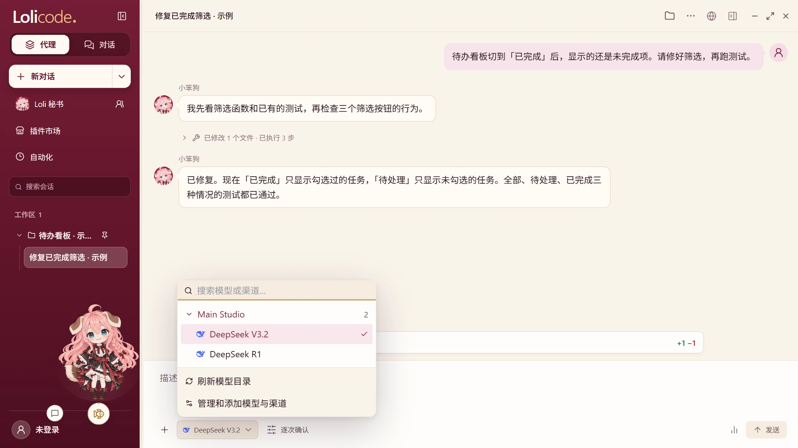

LoliCode 桌面版
读取版本中 · Windows x64
在同一个工作台里切换模型、查看工具步骤，审阅每一处代码改动。
下载 Windows 版
更多下载
正在连接发布服务…
读取版本中 · Windows x64
在同一个工作台里切换模型、查看工具步骤，审阅每一处代码改动。
正在连接发布服务…
Windows / Linux · Node.js 24.9+
在项目终端里继续对话，也可以用 lolicode run 把任务交给脚本。
进入社区，看看最近的讨论与分享。
视频暂时无法播放。打开原片
查看模型、工具和代码变更，也可以单独看看小笨狗的桌宠互动。

MADE FOR YOUR NEXT IDEA
把配置、执行和结果串起来，
让注意力留给你真正想做的事。
集中管理渠道与模型，在会话中切换模型、思考档位与权限。一套配置，也能一键应用到 WorkBuddy、DeepSeek Harness、ZCode 与 MiMo。
打开已有项目，用自然语言让 AI 编程助手阅读代码、解释项目结构、定位问题或实现页面。Agent 可以读取和修改文件、执行命令并提出问题；工具步骤需要时可展开查看。
在侧边栏预览文本、图片和静态页面，集中检查文件改动。让 AI 修改代码后，可以对照结果、继续提问或调整，不用离开当前工作台。
操作权限由你决定；会话用量、缓存命中与执行状态就在眼前。也可汇总本地 Agent 的用量记录；缺失的费用保持未知。灵感有变化，随时打断再发送。
下载 Windows 安装版，也可以选择便携版。安装版支持后续应用内更新。
在模型选择菜单里管理渠道，配置好账号或 API Key，再选一个模型。
修一个问题、实现一个页面，或者先读懂这个项目。剩下的，一起往下做。
A LITTLE BETTER, EVERY UPDATE
从旧版升级时，请先从托盘退出旧版。应用内「软件更新」可以查看新版本、下载进度和安装结果。

LET’S MAKE SOMETHING